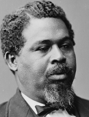

|

|

|
|
|
A slave who escaped bondage during the Civil War, Robert Smalls became a
prominent South Carolina legislator and landowner. He was born on April 5, 1839
to Lydia Smalls, a house slave in Beaufort, South Carolina. Lydia was unable to
verify the identity of Smalls' father. Although Smalls' was treated relatively
well while in bondage, his desire for freedom was always powerful.
With his owner, Henry McKee, Smalls moved to Charleston in 1857. While there,
Smalls worked as a cotton foreman, lamplighter, waiter, and a horse driver. This
labor was done on a contract system with his owner, whereby Smalls earned $15 a
month by hiring himself out and paid his owner a portion of the proceeds. Smalls
met and married Hannah Jones in Charleston, and when their first child was born
he had saved enough money to purchase both his wife and child's freedom from
Jones' master for $700. Unfortunately, although Smalls could buy freedom for
Hannah and their child, he remained enslaved.
In 1861, Smalls was working as a sailor on a cotton steamer, the
Planter, earning $16 a month. Because of this position, Smalls learned
the signals necessary to run through the Confederate forts and batteries that
defended Charleston Harbor. On May 13, Smalls and 7 other black sailors
successfully sailed the Planter out of Charleston and surrendered to the
Onward, a Union ship just outside of the harbor. Smalls' act of courage
earned him a hero's reception in the North. For a time, he worked without pay as
a ship's pilot, but Union naval commanders remembered his expertise in
Confederate harbor defenses. In May of 1863, they asked Smalls to lead an
expedition through Confederate lines to safe waters at Folly Island Creek.
Success in this mission led to Smalls' promotion to captain of the Planter,
earning $150 a month. This made him the first ever African-American captain of a
U.S. Navy ship.
At the conclusion of the war, Smalls returned to South Carolina and used his
accumulated earnings to purchase land, including his former master's estate. He
was a delegate to the South Carolina constitutional convention and he served a
variety of terms in the upper and lower houses of the state legislature. He was
also a delegate to the Republican National Convention. Between 1875 and 1887,
Smalls served South Carolina in the United States House of Representatives.
Smalls ended his career as the customs collector for Beaufort, serving in that
post for two decades.
Hannah Smalls died in 1883, and in 1890 Robert married Annie Wigg, a teacher.
Smalls died in his sleep on February 22, 1915. His funeral was attended by
thousands of mourners.
Source: Eric Foner, Freedom's Lawmakers: A Directory of Black
Officeholders during Reconstruction (New York: Oxford University Press,
1993), 197-98.
|